공조냉동기계기사(구) (2003-05-25 기출문제)
1과목: 기계열역학
1. 온도가 127℃, 압력이 0.5MPa, 비체적 0.4m3/㎏인 이상기체가 같은 압력하에서 비체적이 0.3m3/㎏으로 되었다면 온도는 몇 도로 되겠는가?
- 95.25℃
- 27℃
- 100℃
- 25.2℃
(정답률: 42%)

2. 공기 1㎏의 체적 0.85m3로 부터 압력 500 kPa, 온도 300℃로 변화하였다. 체적의 변화는 약 얼마인가?(단, 공기의 기체상수는 0.287 kJ/kg.K 이다.)
- 0.351 m3 증가
- 0.331 m3 감소
- 0.521 m3 감소
- 0.561 m3 증가
(정답률: 20%)
3. 0.5 kg의 어느 기체를 압축하는데 15kJ의 일을 필요로 하였다. 이 때 12kJ의 열이 계 밖으로 손실 전달되었다. 내부에너지의 변화는 몇 kJ 인가?
- -27
- 27
- 3
- -3
(정답률: 50%)
4. 어느 가스 2㎏이 압력 200kPa, 온도 30℃의 상태에서 체적 0.8m3를 점유한다. 이 가스의 가스상수는 약 몇 kJ/kg.K 인가?
- 0.264
- 0.528
- 2.67
- 2.64
(정답률: 50%)
5. 이론 정적사이클에서 단열압축을 할 때 압축이 시작될 때의 게이지(gage) 압력이 91 kPa이고, 압축이 끝났을 때의 게이지(gage)압력이 1317 kPa라고 하면 이 사이클의 압축비는? (단, k = 1.4 라 한다.)
- 약 4.16
- 약 5.24
- 약 5.75
- 약 6.74
(정답률: 19%)
6. 50℃, 25℃, 10℃의 온도인 3가지 종류의 액체 A,B,C가 있다. A와 B를 동일중량으로 혼합하면 40℃로 되고, A와 C를 동일중량으로 혼합하면 30℃로된다. B와 C를 동일 중량으로 혼합할 때는 몇℃로 되겠는가?
- 16℃
- 18.4℃
- 20℃
- 22.5℃
(정답률: 32%)
7. 수소 1kg이 완전 연소할 때 9kg의 H2O가 생성된다면 최소 산소량은 몇 kg인가?
- 1
- 2
- 4
- 8
(정답률: 40%)
8. 노즐의 출구압력을 감소시키면 질량유량이 증가하다가 어느 압력이상 감소하면 질량유량이 더 이상 증가하지 않는 현상을 무엇이라 하는가?
- 초킹(choking)
- 초음속
- 단열열낙차
- 충격
(정답률: 43%)
9. 다음 중 바르게 설명한 것은?
- 이상기체의 내부에너지는 온도와 압력의 함수이다.
- 이상기체의 내부에너지는 온도만의 함수이다.
- 이상기체의 내부에너지는 항상 일정하다.
- 이상기체의 내부에너지는 온도와 무관하다.
(정답률: 42%)
10. 가역단열펌프에 100kPa, 50℃의 물이 2 kg/s로 들어가 4 MPa로 압축된다. 이 펌프의 소요동력은? [단, 50℃에서포화액(saturated liquid)의 비체적은 0.001 m3/kg이다.]
- 3.9 kW
- 4.0 kW
- 7.8 kW
- 8.0 kW
(정답률: 36%)
11. 단열된 용기안에 이상기체로 온도와 압력이 같은 산소 1 kmol과 질소 2 kmol이 얇은 막으로 나뉘어져 있다. 막이 터져 두 기체가 혼합될 경우 엔트로피의 변화는?
- 변화가 없다.
- 증가한다.
- 감소한다.
- 증가한후 감소한다.
(정답률: 35%)
12. R-12를 작동유체로 사용하는 이상적인 증기압축 냉동사이클이 있다. 이 사이클은 증발기에서 104.08 kJ/kg의 열을 흡수하고, 응축기에서 136.85 kJ/kg의 열을 방출한다고 한다. 이 사이클의 냉방 성적계수는?
- 0.31
- 1.31
- 3.18
- 4.17
(정답률: 49%)
13. 523℃의 고열원으로부터 1MW의 열을 받아서 300K의 대기중으로 600kW의 열을 방출하는 열기관이 있다. 이 열기관의 효율은?
- 0.4
- 0.43
- 0.6
- 0.625
(정답률: 34%)
14. 밀폐된 실린더 내의 기체를 피스톤으로 압축하여 300kJ의 열이 발생하였다. 압축일량이 400kJ이라면 내부에너지 증가는?
- 100 kJ
- 300 kJ
- 400 kJ
- 700 kJ
(정답률: 27%)
15. 속도 250m/s, 온도 30℃ 인 공기의 마하수를 구하면?(단, 공기의 비열비 k = 1.4 라고 한다.)
- 0.716
- 0.532
- 0.213
- 0.433
(정답률: 20%)
16. 증기 동력 시스템에서 이상적인 사이클로 Carnot 사이클을 택하지 않고 Rankine 사이클을 택한 이유는 무엇인가?
- 이론적으로 Carnot 사이클을 구성하는 것이 불가능하다.
- Rankine 사이클의 효율이 동일한 작동 온도를 갖는 Carnot 사이클의 효율 보다 높다.
- 수증기와 액체가 혼합된 습증기를 효율적으로 압축하는 펌프를 제작하는 것이 어렵다.
- 보일러에서 열전달 과정을 정온 과정으로 가정하는 것이 타당하지 않다.
(정답률: 38%)
17. 공기 표준 Brayton 사이클에 대한 다음 설명 중 잘못된것은?
- 단순 가스 터빈에 대한 이상 사이클이다.
- 열교환기에서의 과정은 등온 과정으로 가정한다.
- 터빈에서의 과정은 가역 단열 팽창 과정으로 가정한다.
- 압축기에서는 터빈에서 생산되는 일의 40% 내지 80%를 소모한다.
(정답률: 19%)
18. 엔트로피에 관한 다음 설명 중 맞는 것은?
- Clausius 방정식에 들어가는 온도 값은 절대온도 (K)와 섭씨온도(℃) 모두를 사용할 수 있다.
- 엔트로피는 경로에 따라 값이 다르다.
- 가역과정의 열량은 hs 선도상에서 과정 밑 부분의 면적과 같다.
- 엔트로피 생성항은 항상 양수이다.
(정답률: 11%)
19. 랭킨 사이클에 대한 설명 중 맞는 것은?
- 펌프를 통해 엔트로피는 증가하거나 감소한다.
- 터빈을 통해 엔트로피는 증가하거나 감소한다.
- 보일러와 응축기를 통한 실제 과정에서 압력강하 때문에 증발온도 및 응축온도가 감소한다.
- 터빈 출구의 건도는 낮을수록 좋다.
(정답률: 30%)
20. 이원 냉동 사이클에 대해 맞는 것은?
- 고온부와 저온부에 동일한 냉매를 사용한다.
- 동일한 압력에서 저온일 때 비체적이 큰 냉매를 저온부에, 비체적이 작은 냉매를 고온부에 충전 한다.
- 이원냉동사이클은 다른 사이클보다 효율이 낮다.
- 이원냉동사이클은 이단압축사이클보다 낮은 온도를 얻을 때 사용한다.
(정답률: 55%)
2과목: 냉동공학
21. 다음 응축기 중 열 통과율이 가장 작은 형식은?
- 7통로식 응축기
- 입형 쉘엔드 코일식 응축기
- 증발식 응축기
- 2중 관식 응축기
(정답률: 49%)
22. 나관(裸管)식 냉각코일로 물 1000㎏/h를 20℃에서 5℃로 냉각시키려 할 때 코일의 전열 면적은 ? (단,냉매액과 물과의 대수 평균 온도차는 5℃,열 관류율은 200㎉/m2h℃이다.)
- 15m2
- 30m2
- 60m2
- 120m2
(정답률: 60%)
23. 냉동장치에서 증발온도를 일정하게 하고 응축온도를 높일 때 일어나는 현상은?
- 성적계수 증가
- 압축일량 감소
- 냉동효과 감소
- 플래쉬 가스 발생량 증가
(정답률: 56%)
24. 다음 기술한 것 중 제어기기에 대해서 올바른 것은?
- 증발압력 조정밸브은 증발기 내의 압력이 설정치보다 감소하면 밸브는 열리고 밸브에 흐르는 냉매 가스량은 증가 한다.
- 증발압력 조정밸브는 피냉각물의 온도를 검출해서 밸브의 개도를 증감하고 밸브에 흐르는 냉매 가스량을 조정한다.
- 복수(複數)의 냉각실이 있고 이것에 대응하는 증발기가 다른 증발온도에 작동하고 이것을 1대 압축기로 냉각을 행하는 냉장장치에서 증발온도가 높은 측의 증발기의 출구에 증발 압력 조정밸브를 부착 사용한다.
- 흡입압력 조정밸브는 냉각부하가 감소해도 흡입압력이 일정압력보다 낮아지지 않게 하기 위해서 흡입관에 부착한다.
(정답률: 60%)
25. 비스무트 텔루르비스무트 셀렌이라는 반도체를 이용하여 냉각작용을 유도하는 냉동장치는?
- 공기팽창 냉동장치
- 진공 냉각식 냉동장치
- 증기 분사식 냉동장치
- 열전 냉동장치
(정답률: 81%)
26. 다음 설명 중 옳은 것은 어느 것인가?
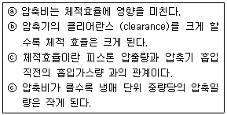
- ⓐ ⓓ
- ⓐ ⓒ
- ⓑ ⓓ
- ⓒ ⓓ
(정답률: 72%)
27. 다음 완성된 냉동기의 작업순서로 바르게 열거된 것은?
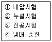
- ② → ③ → ① → ④
- ③ → ② → ① → ④
- ① → ② → ③ → ④
- ② → ① → ③ → ④
(정답률: 58%)
28. 이상 냉동 cycle에서 응축온도 47℃, 증발온도 -10℃이면 성적계수는 얼마인가?
- 2.8
- 3.45
- 4.61
- 5.36
(정답률: 71%)
29. 실내 벽면의 온도가 -40℃인 냉장고의 벽을 노점 온도를 기준으로 방열하고자 한다. 열전도율이 0.035㎉/mh℃인 방열재를 사용한다면 두께는 얼마로 하면 좋은가 ? (단, 외기온도는 30℃,상대습도는 85%,노점온도는 27.2℃ 그리고, 방열재와 외기와의 열전달률은 7㎉/m2h℃로 한다.)
- 50㎜
- 75㎜
- 100㎜
- 120㎜
(정답률: 25%)
30. 고속 다기통 압축기의 윤활에 대한 설명중 옳지 못한 것은?
- 고온에서도 분해가 되지 않고, 탄화하지 않는 윤활유를 선정하여 사용해야 한다.
- 흡입압력이 저하하면 유압계의 지시압력도 저하하므로 유압도 그 만큼 저하한다.
- 압축기가 고도의 진공운전을 계속하면 유압은 저하한다.
- 유압이 과대하게 상승하면 실린더에 필요 이상의 유량이 공급되고, 그 결과 토출가스중에 다량의 유가 혼입된다.
(정답률: 36%)
31. 2단 압축냉동 장치중의 중간 냉각기에 대한 설명이다. 다음 중 설명이 옳은 것은?
- 고압 압축기의 흡입가스 중의 액을 분리시켜 액백현상을 방지 시킨다.
- 증발기에 공급되는 냉매액을 과열시킨다.
- 저압 압축기 흡입가스 중의 액을 분리시킨다.
- 고압 압축기의 토출가스 과열을 냉각시킨다.
(정답률: 54%)
32. 그림과 같은 운전상태에서 운전되는 암모니아 냉동장치에서 피스톤의 배제량이 400 m3/h 이고 체적효율이 0.80 일때 냉동 능력은 얼마가 되는가?
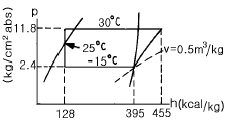
- 49.0 냉동톤
- 51.5 냉동톤
- 63.0 냉동톤
- 65.5 냉동톤
(정답률: 65%)
33. 다음 냉매액 강제 순환식 증발기에 대한 설명 중 옳은 것은 어느 것인가?
- 냉매액 펌프 출구의 냉매량은 증발기에서 증발하는 냉매량과 같다.
- 냉매액을 강제순환 시키므로 냉각작용은 냉매의 현열을 이용한 것이다.
- 강제 순환식이므로 증발기에 오일이 고일 염려가 없고 배관 저항에 의한 압력강하도 보강된다.
- 증발기에는 항상 냉매액이 충만하여 있으므로 액압축이 일어나기 쉽다.
(정답률: 63%)
34. 원심식 냉동기(터보 냉동기)에서 용량 조절하는 방법중에서 현재 가장 많이 채용하고 있는 흡입 댐퍼제어는 어떤 원리를 이용하는가?
- 댐퍼를 닫으면 전동기의 회전수를 감소시켜서 흡입가스를 감소시킨다.
- 댐퍼를 닫으면 팽창밸브의 냉매 통과구를 좁히므로 흡입가스가 감소된다.
- 댐퍼를 닫으면 흡입압력이 감소되고 흡입가스를 감소시킨다.
- 댐퍼를 닫으면 냉각수를 감소시켜서 응축압력을 높이고,흡입가스를 감소시킨다.
(정답률: 57%)
35. 냉동장치에서 플래시가스 발생원인 중 옳지 않은 것은?
- 액관이 직사광선에 노출되었다.
- 응축기의 응축수량이 갑자기 많아졌다.
- 액관이 현저하게 입상하거나 지나치게 길다.
- 관의 지름이 작거나 관내에 스케일에 의하여 관경이 작아졌다.
(정답률: 68%)
36. 압축기의 토출밸브가 누설하면 실린더가 과열되고,토출가스 온도가 높아지며, 냉동능력이 ( )진다.( )에 적당한 것은?
- 일정해
- 높아
- 낮았다 높아
- 낮아
(정답률: 78%)
37. 다음은 냉동장치에 사용되는 자동제어기기에 대하여 설명한 것이다. 이 중 옳은 것은?
- 고압 차단 스위치는 토출압력이 이상 저압이 되었을 때 작동하는 스위치이다.
- 온도조절스위치는 냉장고 등의 온도가 일정범위가 되도록 작용하는 스위치이다.
- 저압 차단 스위치는 냉동기의 고압측 압력이 너무 저하 하였을 때 차단하는 스위치이다.
- 유압 보호 스위치는 유압이 올라간 경우에 유압을 내리기 위한 스위치이다.
(정답률: 83%)
38. 프레온(Freon)계 냉매중 R - 12와 R - 152의 혼합냉매는 어느 것인가?
- R - 114
- R - 137
- R - 500
- R - 502
(정답률: 58%)
39. 다음 2단 냉동 사이클에서 고저단 냉매 순환량비(고단/저단)를 구하시오.
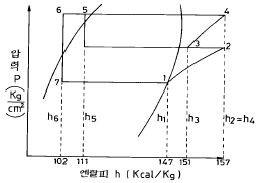
- 1.38
- 1.45
- 1.59
- 1.72
(정답률: 27%)
40. 압축기와 응축기 사이에 유분리기를 설치하려 한다. 유분리기를 압축기로 부터 어느 위치 거리에 설치하면 작용이 양호한가? (단, 암모니아 장치인 경우)
- 1/4위치
- 2/4위치
- 3/4위치
- 1위치
(정답률: 68%)
3과목: 공기조화
41. 형광등의 1W당 발열량과 가장 근사한 값은? (단, 발라스트 발열포함)
- 0.86㎉/h
- 1.03㎉/h
- 0.72㎉/h
- 0.075㎉/h
(정답률: 43%)
42. 다음 고속덕트에 대한 설명 중 알맞지 않는 것은?
- 주덕트내의 풍속을 15m/s 이상으로 한다.
- 운전동력비가 많아서 흔히 사용되지 않는다.
- 덕트의 크기는 정압손실 0.4mmAq/m 정도에서 설계된다.
- 에너지 절약과 관계 없는 배연덕트에는 적용되지 않는다.
(정답률: 49%)
43. 감습장치가 아닌 것은 어느 것인가?
- 압축식 감습장치
- 흡수식 감습장치
- 흡착식 감습장치
- 초음파 감습장치
(정답률: 74%)
44. 어떤 냉동창고의 벽체가 두께 15cm 열전도율 λ =1.4kcal/mh℃인 콘크리트와 두께 5cm 열전도율 λ =1.2kcal/mh℃인 모르타르로 구성되어 있다면 벽체의 열통과율(kcal/m2h℃)은 얼마인가?(단, 내벽측 표면 열전달률 : 8㎉/m2h℃ 외벽측 표면 열전달률 : 20㎉/m2h℃ 이다.)
- 0.026kcal/m2h℃
- 0.323kcal/m2h℃
- 3.088kcal/m2h℃
- 38.175kcal/m2h℃
(정답률: 66%)
45. 습공기의 수증기 분압을 Pv,동일온도의 포화 수증기압을 Ps라 할 때 다음 중 바르지 못한 것은?
- (Ps/Pv) x 100 = 상대습도
- Pv ＜ Ps일 때 불포화 습공기
- Pv = Ps일 때 포화 습공기
- Pv = 0 건공기
(정답률: 78%)
46. 공기조화 덕트설계와 관계가 없는 것은?
- 공기의 온도[℃]
- 풍속[㎧]
- 풍량[m3/h]
- 마찰손실[㎜Aq]
(정답률: 75%)
47. 보기 중 실내공기의 가습 방법으로 맞는 것 모두를 고른 것은?
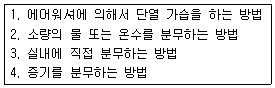
- 1,2,3
- 1,2,3,4
- 2,3,4
- 1,3,4
(정답률: 69%)
48. 다음 중 출입의 빈도가 잦아 틈새바람에 의한 손실부하가 비교적 큰 경우의 난방방식으로 적합한 것은?
- 증기난방
- 온풍난방
- 온수난방
- 복사난방
(정답률: 73%)
49. 고속 덕트의 설계법에 관한 설명 중 맞지 않는 것은?
- 송풍기 동력이 과대해진다.
- 동력비가 증가된다.
- 배연 덕트는 소음의 고려가 필요하지 않다.
- 리턴 덕트와 공조기에서는 저속방식과 다른 풍속으로 한다.
(정답률: 54%)
50. 온수난방에서
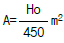
의 식에서 A는 무엇인가?- 방열기의 상당 방열면적
- 방열기의 증발량
- 방열기의 방열량
- 방열기의 응축수량
(정답률: 84%)
51. 건구온도가 27℃, 절대습도가 0.012㎏/㎏′ 인 실내공기와 건구온도가 25℃, 절대습도가 0.002㎏/㎏′ 인 실외공기를 2:1의 비율로 혼합하였을 때 혼합후의 건구온도와 절대습도는 각각 얼마인가?
- 23.7℃, 0.0⑤3㎏/㎏′
- 23.7℃, 0.0087㎏/㎏′
- 26.3℃, 0.0⑤3㎏/㎏′
- 26.3℃, 0.0087㎏/㎏′
(정답률: 71%)
52. 방열기의 결정순서로 올바른 것은?
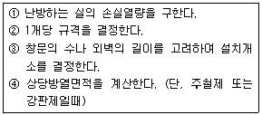
- ④→ ③→ ②→ ①
- ②→ ④→ ③→ ①
- ①→ ②→ ④→ ③
- ①→ ④→ ③→ ②
(정답률: 50%)
53. 일반적으로 공조기용 냉수코일 설계에 대한 설명 중 틀린것은?
- 통과 풍속은 2 - 3㎧ 정도이다.
- 입구 냉수온도는 25℃ 전후로 사용한다.
- 코일내의 유속은 1m 전후가 사용된다.
- 플레이트 휀코일이 널리 쓰인다.
(정답률: 60%)
54. 공기 세정기의 주요부는 세정실과 무엇으로 구분되는가?
- 배수관
- 유닛 히트
- 유량조절 밸브
- 엘리미네이트
(정답률: 76%)
55. 온풍로 난방의 특징이 아닌 것은?
- 열효율이 높다.
- 보수, 취급이 간단하다.
- 열용량이 크므로 예열시간이 많이 걸린다.
- 설치면적이 좁으므로 설치장소에 제한을 받지 않는다
(정답률: 76%)
56. 다음 그림은 냉방의 한 과정이다. 설명 중 틀린 것은?
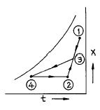
- ①은 신선외기의 상태이다.
- ③은 외기와 실내공기의 혼합점이다.
- ③ → ④의 과정은 냉각감습과정이다.
- ②의 상태는 공조기의 출구상태점이다.
(정답률: 38%)
57. 1000명을 수용할 수 있는 강당에 전등에 의해 매시간 980kcal/h의 열이 발생하고 있다. 실내의 온도를 26℃로 유지하기 위하여 시간당 필요한 환기량은? (단, 외기온도가 12℃이며, 1인당 현열 부하는 44kcal/h, 잠열부하는 35kcal/h 이다.)
- 8,923 m3/h
- 10,708 m3/h
- 11,155 m3/h
- 13,386 m3/h
(정답률: 50%)
58. 각 층에 1대 또는 여러대의 공조기를 설치하는 방법으로 단일덕트의 정풍량 또는 변풍량 방식, 2중 덕트방식 등에 응용할 수 있는 공조방식은?
- 각층 유닛 방식
- 유인유닛 방식
- 복사냉난방 방식
- 팬코일 유닛 방식
(정답률: 70%)
59. 염화리튬(LiCl)을 사용하는 흡수식 감습장치가 냉각코일을 사용하는 냉각식 감습장치보다 유리한 경우가 아닌 것은?
- 공조되어 있는 실내의 건구온도가 0℃ 이상이고, 노점온도가 0℃ 이하일 때
- 공조되어 있는 실내의 현열비가 0.6 이하일 때
- 실내 현열부하의 변동이 작을 때 실내온도를 일정하게 유지할 경우
- 온도가 32℃ 이상 또는 10℃ 이하에서 저습도로 할때
(정답률: 45%)
60. 그림의 습공기 선도는 다음 어느 장치에 대응하는 것인가 ? (단, 림=외기, 립=환기, HC=가열기, CC=냉각기)
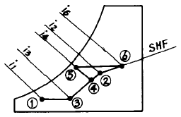
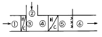
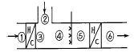
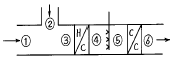
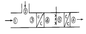
(정답률: 83%)
4과목: 전기제어공학
61. 조종사가 배치되어 있지 않는 엘리베이터의 자동제어는?
- 추종제어
- 프로그램제어
- 정치제어
- 프로세스제어
(정답률: 56%)
62. 제어장치가 제어대상에 가하는 제어신호로 제어장치의 출력인 동시에 제어대상의 입력인 신호는?
- 동작신호
- 조작량
- 제어량
- 목표값
(정답률: 15%)
63. 논리식
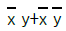
를 간단히 하면?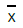
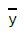
- x+y
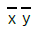
(정답률: 54%)
64. 회로에서 i2 가 0 이 되기 위한 C 의 값은? (단, L은 합성인덕턴스이고, M은 상호인덕턴스이다.)
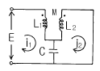
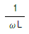
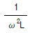
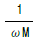
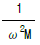
(정답률: 41%)
65. 뒤진 역률 80%, 1000kW의 3상부하가 있다. 이것에 콘덴서를 설치하여 역률을 95%로 개선하려고 한다. 필요한 콘덴서의 용량은 몇 kVA 인가?
- 422
- 633
- 844
- 1266
(정답률: 16%)
66.
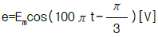
와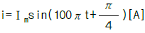
와의 위상차를 시간으로 나타내면 몇 초에 해당되는가?- 5.33×10-4
- 6.33×10-4
- 7.33×10-4
- 8.33×10-4
(정답률: 18%)
67. 전력에 대한 설명으로 옳지 않은 것은?
- 단위는 Ｊ/s 이다.
- 단위시간의 전기 에너지이다.
- 공률과 같은 단위를 갖는다.
- 열량으로 환산할 수 있다.
(정답률: 31%)
68. 교류를 직류로 변환하는 전기기기가 아닌 것은?
- 단극발전기
- 수은정류기
- 회전변류기
- 전동발전기
(정답률: 22%)
69. 적분시간이 3분이고, 비례감도가 5인 PＩ조절계의 전달함수는?
- 5+3S
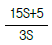
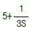
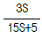
(정답률: 43%)
70. 직류 전동기의 규약효율을 나타내는 식은?
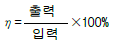
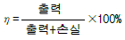
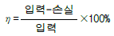
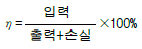
(정답률: 47%)
71. 제어동작 중 PＩD(비례적분미분)동작을 이용했을 때의 특징에 해당되지 않은 것은?
- 응답의 오버슈트를 감소시킨다.
- 잔류편차를 최소화 시킨다.
- 정정시간을 적게 한다.
- 응답의 안정성이 작다.
(정답률: 58%)
72. 저항체에 전류가 흐르면 줄열이 생기는데 이때 안전전류는 전력의 몇 제곱에 비례하는가?
- 1
- 2
- 1/2
- 3/2
(정답률: 34%)
73. 서보전동기의 특징으로 잘못 표현된 것은?
- 기동, 정지, 역전 동작을 자주 반복할 수 있다.
- 발열이 작아 냉각방식이 필요 없다.
- 속응성이 충분히 높다.
- 신뢰도가 높다.
(정답률: 41%)
74. 그림과 같은 신호선도와 등가인 것은?
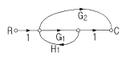
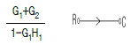
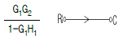
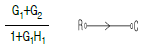
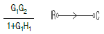
(정답률: 42%)
75. 철심을 가진 변압기 모양의 코일에 교류와 직류를 중첩 하여 흘리면 교류임피던스는 중첩된 직류의 크기에 따라 변하는데 이 현상을 이용하여 전력을 증폭하는 장치는?
- 회전증폭기
- 자기증폭기
- 다이리스터
- 차동변압기
(정답률: 66%)
76. 하나의 폐회로를 형성하고 자동제어의 기본회로를 형성하는 제어는?
- 시퀀스제어
- 피드백제어
- 온.오프제어
- 프로그램제어
(정답률: 48%)
77. 다음 전선 중 도전율이 가장 우수한 재질은 어느 것인가?
- 경동선
- 연동선
- 경알미늄선
- 아연도금철선
(정답률: 27%)
78. 극수가 4 이고 슬립이 6%인 유도전동기를 어느 공장에서 운전하고자 할 때 예상되는 회전수는 약 몇 rpm 인가?
- 1300
- 1400
- 1700
- 1800
(정답률: 32%)
79. 피드백 제어계의 제어장치에 속하지 않은 것은?
- 설정부
- 조절부
- 검출부
- 제어대상
(정답률: 45%)
80. PLC(Programmable Logic Controller)의 CPU부의 구성과 거리가 먼 것은?
- 데이터 메모리부
- 프로그램 메모리부
- 연산부
- 전원부
(정답률: 57%)
5과목: 배관일반
81. 급탕관으로 많이 사용되는 동관은?
- K형 동관
- S형 동관
- L형 동관
- N형 동관
(정답률: 30%)
82. 급탕 배관 시공상 주의사항으로 옳지 않은 것은?
- 상향식 공급 방식에서 급탕 수평 주관은 선상향 구배로 한다.
- 하향식 공급 방식에서는 급탕관은 선상향 구배로 한다.
- 상향식 공급 방식에서 복귀관은 선하향 구배로 한다.
- 하향식 공급 방식에서는 복귀관은 선하향 구배로 한다.
(정답률: 41%)
83. 관경 300mm, 배관길이 500m의 중압 가스수송관에서 A· B점의 게이지 압력이 3kg/cm2, 2kg/cm2인 경우 가스유량은 얼마인가?(단, 가스 비중 0.64, 유량계수 52.31로 한다.)
- 10,238 m3/h
- 20,583 m3/h
- 38,315 m3/h
- 40,153 m3/h
(정답률: 24%)
84. 급탕 배관에서 중앙식 급탕법의 장점을 나열하였다. 가장 관련이 없는 것은?
- 일반적으로 다른 설비 기계류와 동일한 장소에 설치할 수 있어 관리상 유리하다.
- 저탕량이 많으므로 피크부하에 대응할 수 있다.
- 열원으로 석탄,중유 등이 사용될 수 있으므로 연료비가 싸게 든다.
- 배관이 연장되므로 열효율이 높다.
(정답률: 45%)
85. 급탕배관 시공시 고려할 사항이 아닌 것은?
- 청소구의 설치장소
- 배관구배
- 배관 재료의 선택
- 관의 신축
(정답률: 54%)
86. 가스 배관재료 중 내약품성 및 전기 절연성이 우수하며 사용온도가 80℃이하인 관은?
- 주철관
- 강관
- 동관
- 폴리에틸렌관
(정답률: 49%)
87.
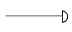
은 어떤 관의 말단부 표시인가?- 티
- 소켓
- 플러그
- 캡
(정답률: 42%)
88. 가스용접에서 아세틸렌가스(C2H2)와 산소(O2)를 이용하여 용접시 발생하는 불꽃이 아닌 것은?
- 탄화불꽃
- 기화불꽃
- 산화불꽃
- 표준불꽃
(정답률: 36%)
89. 고가 탱크식 급수방법을 설명하였다. 틀린 것은?
- 고층건물이나 상수도 압력이 부족할 때 사용된다.
- 저수량을 언제나 확보할 수 있으므로 단수가 되지 않는다.
- 건물내의 밸브나 각 기구에 일정한 압력으로 물을 공급한다.
- 고가탱크에 펌프로 물을 압송하여 탱크내에 공기를 압축 가압하여 일정한 압력을 유지시킨다.
(정답률: 36%)
90. 단관식 상향 증기 난방에서 증기와 응축수가 순류하는 수평 지관의 구배는?
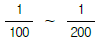
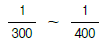
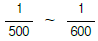
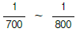
(정답률: 40%)
91. 하아트 포드(Hart ford) 배관법과 관계 없는 것은?
- 보일러내의 안전 저수면 보다 높은 위치에 환수관을 접속한다.
- 저압증기 난방에서 보일러 주변의 배관에 사용한다.
- 보일러내의 수면이 안전수위 이하로 내려가기 쉽다.
- 환수주관에 침적된 찌꺼기를 보일러에 유입시키지 않는다.
(정답률: 47%)
92. 다음 중 복사난방의 특징이 아닌 것은?
- 방열기의 설치공간이 따로 필요 없다.
- 시설비가 비교적 비싸다.
- 대류가 적으므로 바닥면의 먼지가 상승이 적다.
- 열용량이 크므로 예열시간이 짧다.
(정답률: 49%)
93. 온수난방 배관에서 리버스 리턴(reverse return)방식을 채택하는 이유는?
- 온수의 유량 분배를 균일하게 하기 위하여
- 배관의 길이를 짧게 하기 위하여
- 배관의 신축을 흡수하기 위하여
- 온수가 식지 않도록 하기 위하여
(정답률: 52%)
94. 고압 증기관에서 권장 제한 최대유속은 얼마인가?
- 20 m/s
- 35 m/s
- 45 m/s
- 60 m/s
(정답률: 19%)
95. 증기난방에서 증기 경로가 옳은 것은?
- 보일러-스팀헷다-증기공급관-감압밸브-방열기
- 보일러-감압밸브-증기공급관-스팀헷다-방열기
- 보일러-증기공급관-감압밸브-스팀헷다-방열기
- 보일러-스팀헷다-감압밸브-증기공급관-방열기
(정답률: 32%)
96. 역지변(check valve)의 도시기호는?
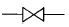
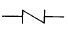
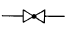
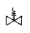
(정답률: 60%)
97. 파이프 지지의 구조와 위치를 정하는데 꼭 고려해야 할 것은?
- 유속 및 온도
- 압력 및 유속
- 배출구
- 중량과 지지간격
(정답률: 43%)
98. 다음 중 건물의 급수량 산정의 기준이 되지 않는 것은?
- 건물의 연면적
- 건물의 전체 용적
- 건물의 사용 인원수
- 설치된 기구의 수
(정답률: 22%)
99. 경질 염화비닐관의 특성이 아닌 것은 어느 것인가?
- 열 팽창율이 크다.
- 관내 마찰손실이 적다.
- 산,알칼리 등의 부식성 약품에 대해 내식성이 적다.
- 저온 고온에서 강도가 저하된다.
(정답률: 50%)
100. 배관 계통의 관경 결정 방법에서 유량이 다르더라도 단위길이당 마찰손실이 일정하도록 하고 관경을 결정하는 방법은?
- 정압법
- 균압법
- 균등법
- 등마찰손실법
(정답률: 48%)
가열법칙: P, n이 일정한 상태에서 V/T = 상수
비체적이 작아진 것은 V가 작아졌다는 것을 의미한다. 따라서 T도 작아져야 한다.
V1/T1 = V2/T2
0.4/400 + 127 = 0.3/300 + T2
T2 = 27℃